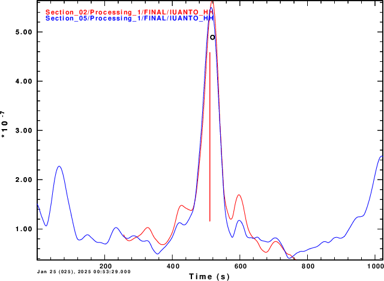

This is a simple test of the effect of changing the cut window. The reason for doing this is to see if the envelope stack can be sharpened.
While original code of the shell script DOCOMPRESS in Section_02 had the lines
TMIN=`echo $DIST $UMAX | awk '{print $1/$2}' `
TMAX=`echo $DIST $UMIN | awk '{print $1/$2}' `
which cut the original signal at travel times of Distance/UMAX to Distance/UMIN.
For this test, the cut window was increased by 100 sec on either side of the cut by using the lines
the simulation was run again for the source position at (0,0). The comparison is show in the next figure.
|  |
Here we see that the wider window does sharpen the stack, but also adds some large side lobes. To be fair, the Section_02 trace consisted of 512 seconds (512 points) while the Section_05 was 1024 sec long (1024 samples).